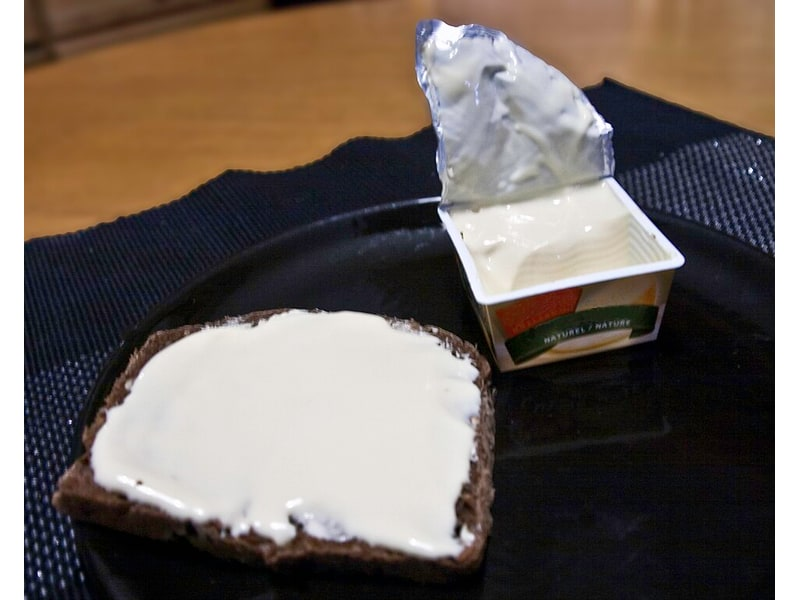

Polskie obiadki
Naleśniki z serem
Naleśniki z serem: 10 g białka, 195 kcal, 22 g węglowodanów i 8 g tłuszczu na 100 g. Kategoria: Polskie obiadki.
Kalorie195 kcalna 100 g
Białko / proteiny10 g
Węglowodany22 g
Tłuszcz8 g
Cena (szac.)~1,55 złza 100 g
Ceny zaktualizowano: maj 2026 (szacunek — ceny w popularnych supermarketach)
Porcja: porcja (2 szt., 200g)
| Kalorie | 390 kcal |
|---|---|
| Białko | 20 g |
| Węglowodany | 44 g |
| Tłuszcz | 16 g |
| Cena (szac.) | ~3,09 zł |
Szczegółowe składniki odżywcze na 100 g
| Wartość energetyczna (kalorie) | 195 kcal |
|---|---|
| Białko (proteiny) | 10 g |
| Węglowodany | 22 g |
| Tłuszcz | 8 g |
| Tłuszcze nasycone | 4 g |
| Tłuszcze nienasycone | 4 g |
| Witaminy i minerały | Wapń, Żelazo, Tiamina (B1) |
| Współczynnik kcal / 1 g białka | 19.5 |
| Cena produktu (szac. za 100 g) | ~1,55 zł |
| Cena za 100 g białka (szac.) | ~15,45 zł |